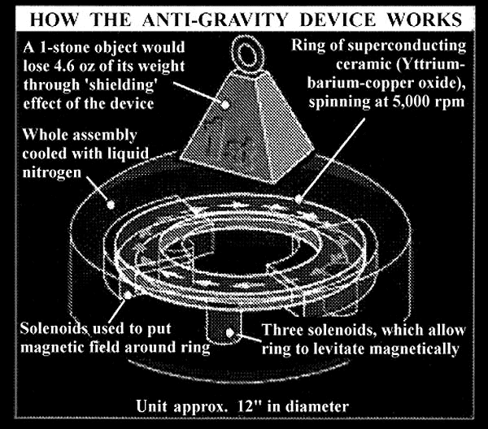
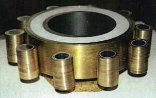

Anti-gravity Device
Sounds like something out of a science fiction movie right? Well, it’s not at all. Scientists from Finland have actually discovered an anti-gravity device by accident. Research was lead by Dr. Eugene Podkletnov, at Tampere University of Technology in Finland. The team of scientists was working on superconducting materials, which is the ability of some materials to lose their electrical resistance at low temperatures. While carrying out tests on a 12 inch rapidly spinning disc of super-conducting ceramic suspended in the magnetic field of three electrical coils, all enclosed in a low-temperature vessel called a cryostat, one of the scientists was smoking a pipe when he noticed the smoke over the cryostat kept going straight up to the ceiling. The scientists couldn't explain it at the time; this affect was deemed impossible by most scientists. They noticed a variety of materials and objects suspend above it would consistently lose between .5 to 2 percent of its weight. If one device is suspended over another device the effect is then doubled. They even found that the air pressure directly above rotating magnetic field dropped slightly, with the affect detectable directly above the device on every floor of the laboratory.
A more recent experiment calls to make a superconductive disc about 5.7” in diameter and .24” in thickness, cool below -233°C, then levitate it using a magnetic field. By applying an electric current alternating at around 100 kilohertz to the coils surrounding the disc it should rotate in the constantly changing magnetic field, similar to an electric motor. Once the disc spins more than 5,000 revolutions per minute, objects placed above it lose around 1 percent of their weight… as the disc spins faster the weight reduced increases.

What makes this claim different from previous “antigravity” devices is that this has survived intense scrutiny by skeptical, independent experts. Also, when Dr. Podkletnov and his team promptly submitted their work to one of the leading physics journals in the world, the Holland Journal of Physics, called Physica C it was accepted. It survived the scrutiny of peer review… The sad part of this story is that this was back in 1992! If this was successful, it would revolutionize our world. So why haven’t you ever heard of this invention before? The same reason you never heard of Nikola Tesla’s free energy device (click here) Royal Rife’s cancer curing device (click here) or Stanley Pons and Martin Fleischmann’s cold fusion device (click here). Someone with a lot of power thought it would be more beneficial for us to not have to rewrite science as we know it today and figured they would have more money if things stayed the way they are. The power of one person can be very influential; it comes down to who you know in this world.
But to continue with this unique story… later in 1995 the Max Planck Institute of Physics (famous in Munich, Germany) did a follow up study, and was able to confirm the results. Unfortunately, both the initial research of Dr. Podkletnov and the Planck Institute confirmation were virtually ignored by the media in the United States. What’s most interesting is what happens next.
Dr. Podkletnov withdrew a follow up paper that was submitted, and even accepted already by the Journal of Physics-D: Applied Physics, published by Britain’s Institute of Physics. Although the paper passed all scrutiny and peer review, one of Dr. Podkletnov’s co-authors suddenly withdrew his name from the paper without reason. Dr. Podkletnov then denied having done any of the research at all. A follow up investigation showed that he had participated in the work, but for an unknown reason decided to give up his credit for working on something that could change the world. Suppressed
The truth is “antigravity” is a topic that you don’t talk about if you want to keep your professional career intact. It’s something that’s considered to be quack science since it goes against Albert Einstein’s theory of gravity. Einstein argued that gravity is essentially geometry, a bending of space and time, rather than a force that can be counteracted. An “antigravity” device proves Einstein to be wrong along with our version of modern physics.


Yet, this didn’t stop NASA from assembling a team at the University of Alabama, funded by the Marshall Space Flight Center at Huntsville to test the results. Although they began experimenting in 1996, they didn’t publicly admit to it until 2000. Ron Koczor, assistant director of science and technology at the Space Science Laboratory in NASA’s Marshall Space Flight Center put together a team led by Ning Li, a Chinese physicist. Their task was to build their own antigravity device and see if they could reproduce Dr. Podkletnov’s results. Some of the scientists working on the device admitted that it was a success, however they made a public announcement that it didn’t work. Li was accused by Koczor of spending more effort on proving her theories about how the device worked than creating a working device. Afterword, she returned to her home in China to most likely resume work on the device. A physics professor at this university, Larry Smalley, was quoted saying that NASA assembled a team of incompetent scientist whom couldn’t give the project a serious chance. He said, “It made me feel like they wasted time, a lot of money, and a really golden opportunity to do something.” Also, if NASA admits this device does exist, they would have to agree with Richard C. Hoagland’s non-mainstream Hyper-dimensional Physics Theory. (click here to read about it) Dr. Podkletnov isn’t even the only person to claim to invent an antigravity device using similar methods: Nikola Tesla, Dr. Bruce Depalma, John Hutchinson, etc.
NASA did however fund $600,000 to another research from a firm based in Ohio. Yet, so far NASA has not came out publicly about the results from this, even though this occurred back around 2000. Ron Koczor (in charge of this initiative) was quoted saying “Don’t call it antigravity research… call it gravity modification, gravity anomalies. Anything but antigravity. That’s a red flag.” This most likely explains why we haven’t heard about this yet and it’s about to be 2013. Later in 2002 however, it is known that Takashi Nakamura (a senior physics professor employed at Toshiba Electronics in Japan) was quoted saying that he managed to reproduce Dr. Podkletnov’s experiments with better results. He said, “With all my respect to Evgeny-san, our ceramics is better and we got 8.70% of the weight reduction.”
If one day this is “allowed” to be accepted by main-stream science, you could say goodbye to rockets and the internal combustion engine and hello to energy-saving, gravity-powered spaceships, airplanes, cars, elevators, and even more efficient power generators. Hopefully, that day will come sooner rather than later… the future ultimately depends on us and our younger generation. If you would like to see a video of a similar experiment of Dr. Podkletnov in action, please click here.
Wisdom-Square › UFO Technology › Anti-gravity Device